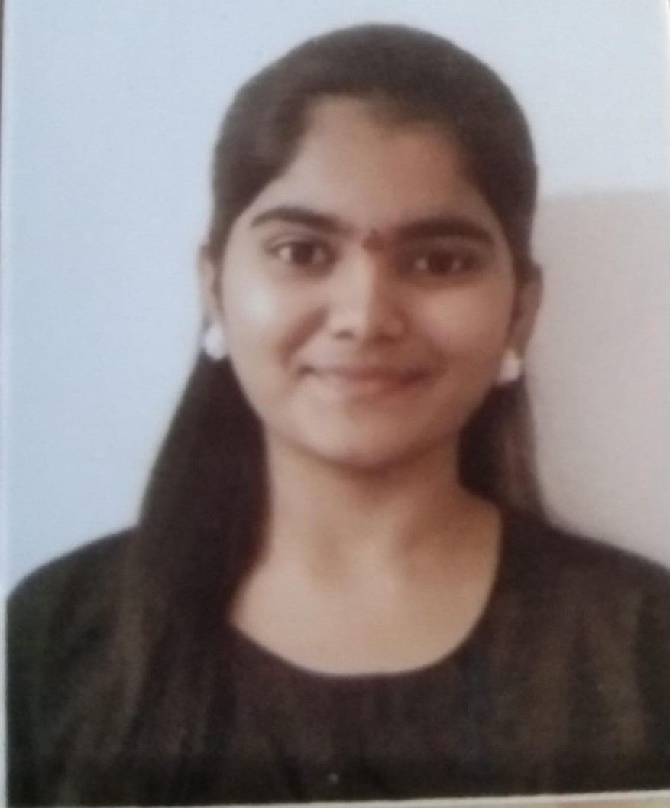

SNEHA TODKAR

CERTIFICATION
MSCIT
Advance diploma in software programming
IBM Frontend WebDevelopment Internship
CONTACT
9284645330
snehatodkar2005@gmail.com
 Linkedin Profile
Linkedin Profile
 Github Repositry
Github Repositry
EDUCATION
St. Miras College for girls
TYBCA (pursuing)
2023-2025
St. Miras College for girls
11th 12th
61.33%
2021-2022
Nutan Madhyamik
Vidyalaya School
10th
85.20%
2020
SKILLS
Skills
Teamwork
Collaboration
Problem solving
Analytical and quantitative
Web development
(HTML, CSS, database
(SQL basic)
SUMMARY
BCA fresher with a strong foundation in computer applications,
programming languages, and technical skills. A quick learner
and team player, eager to contribute to an organization’s
success by leveraging my knowledge and passion for
technology. Motivated to learn and grow, seeking a challenging
opportunity to apply my skills and gain practical experience in
the field of software programming .
PROJECT EXPREIENCE
IBM Web development internship (1 month)
Worked as a team.
We made project on Hair studio with help of HTML, CSS,
JAVASCRIPT .
Project on Online Shopping System .
Worked on database and back-end connectivity .
Project on Placement Management System(pursing).
HOBBIES/CO HOBBIES AND COCURRICULAR ACTIVITIES
Learning new things
Participate in exhibition on computer technology
Participate in college event Exodus
Volunteering